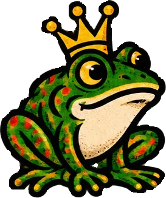

El viaje de tu web
Cinco paradas desde tu ordenador hasta el móvil de cualquiera.
El mapa del zoo: pulsa cada parada
Como en la entrada de cualquier zoo, primero el mapa. Antes de tocar ningún botón, entiende el recorrido. Pulsa las paradas en orden: cada una te cuenta qué pasa ahí, con una analogía de la vida real.
Las palabras que vas a oír
https://pizzeria-chicle.vercel.app/carta.html.pizzeriachicle.es. Se alquila por años.localhost y Live Server
Tu servidor de pruebas, que ya usas desde el primer bloque.
Lo que ya sabes… y lo que significa
Desde el primer bloque abres tus páginas con Live Server en Visual Studio Code (clic derecho → Open with Live Server, o el botón Go Live de abajo a la derecha). No vamos a repetir la instalación. Hoy toca entender qué es esa dirección rara que aparece en el navegador:
http://127.0.0.1:5500/carta.html
127.0.0.1olocalhost: es la dirección de «este mismo ordenador». Todos los ordenadores del mundo se llaman así a sí mismos. Por eso, si le pasas ese enlace a un amigo, su ordenador buscará la web… en su propio ordenador, y no la encontrará.:5500: el puerto. Un ordenador puede tener muchos servidores a la vez; cada uno escucha en una «puerta» con número. Live Server usa la 5500 (si está ocupada, la 5501…)./carta.html: el archivo, contado desde la carpeta que abriste en VS Code.
localhost es la cocina de tu casa: pruebas el plato, le echas sal, lo vuelves a probar (Live Server recarga solo al guardar). Pero nadie de fuera puede comérselo hasta que abras un restaurante: eso es publicar.
¿Por qué no basta con hacer doble clic en el archivo?
Si haces doble clic en index.html, la barra de direcciones dice algo como file:///C:/Users/ane/web/index.html. Eso no es un servidor: el navegador lee el archivo del disco directamente. Para HTML y CSS sencillos funciona casi igual, pero:
- Hay cosas que el navegador bloquea con
file:///por seguridad (cargar datos o módulos de JavaScript, por ejemplo). - Las rutas que empiezan por
/apuntan a la raíz del discoC:, no a tu carpeta. - No se recarga solo al guardar.
Live Server se parece mucho más a lo que pasará en internet. Si funciona en Live Server, lo normal es que funcione publicado, con una excepción que verás en la siguiente sección: las mayúsculas.
Truco: verla en tu móvil
Si tu móvil y tu ordenador están en la misma wifi, puedes abrir la web del ordenador desde el móvil cambiando 127.0.0.1 por la IP de tu ordenador en la red (algo como 192.168.1.35:5500). Para eso, en los ajustes de Live Server hay que permitir conexiones de otros equipos y el cortafuegos de Windows tiene que dejarlo pasar. En redes de centros educativos suele estar bloqueado; en casa, prueba. Y si no, para eso tienes el modo móvil de las DevTools.
Prepara la carpeta
Renombrar a index.html y montar una web de varias páginas.
¿Por qué index.html?
Cuando alguien escribe pizzeriachicle.es sin decir qué archivo quiere, el servidor necesita saber qué enseñar. La regla, en casi todos los servidores del mundo, es: «si no me dicen archivo, doy el que se llame index.html».
- Si tu portada se llama
portada.htmloweb-final-v3.html, la dirección principal dará error 404 (no encontrado) o una lista de archivos. - Si se llama
Index.html(con mayúscula), en Windows funciona y en el servidor no. - Vale igual para las subcarpetas:
carta/index.htmlse abre conpizzeriachicle.es/carta/. Así salen direcciones limpias, sin.html.
index.html es el recibidor: si llamas al timbre y no dices a qué habitación vas, te quedas ahí.
Simulador: de archivo a dirección
Este es un proyecto de varias páginas. Pulsa cada archivo y verás la dirección que tendrá publicado en Vercel y en GitHub Pages, y si tiene algún problema. Los nombres en rosa tienen trampa.
¿Es buen nombre de archivo?
Las 6 reglas de los nombres
- Minúsculas siempre. Los servidores (casi todos Linux) distinguen mayúsculas:
Logo.PNG≠logo.png. En Windows no se nota… hasta que publicas y desaparecen las imágenes. - Sin espacios. En la URL se convierten en
%20y el validador del W3C los marca como error. Usa guiones:mi-foto.jpg. - Sin tildes ni eñes.
pequeña.jpgse convierte enpeque%C3%B1a.jpg. Mejorpequena.jpg. - Guion medio, no bajo para separar palabras:
carta-de-vinos.html. Google lee el guion como separador. - Nombres que digan qué es:
contacto.html, nopagina3.html. - Sin «final», «v2», «bueno»: el historial ya lo guarda GitHub.
Estructura de una web de varias páginas
- Un único CSS para todas las páginas, enlazado desde cada una: cambias un color y cambia en toda la web.
- Las rutas relativas (las que ya conoces, con
../) funcionan igual en tu ordenador, en Vercel y en GitHub Pages. - Repite la misma cabecera y el mismo pie en todas las páginas; cambia el
<title>, ladescriptiony elmain.
Rutas como C:\Users\ane\Desktop\web\img\logo.png o file:///…: en tu ordenador se ve la imagen porque está en tu disco. En internet nadie tiene tu disco. Y las barras siempre /, nunca \.
Repositorio en GitHub
Crear el repositorio, subir los archivos e invitar a tus compañeros.
¿Qué es GitHub?
GitHub es una web donde se guardan proyectos de código. Cada proyecto es un repositorio: una carpeta en la nube que, además de los archivos, guarda todo el historial. Cada vez que guardas cambios (un commit) queda apuntado quién cambió qué, cuándo y por qué. Si rompes algo, puedes volver atrás.
GitHub es una despensa con cámara de vigilancia: guarda los ingredientes de tu web y graba cada vez que alguien mete o saca algo. Pero no cocina: para servir la web al público necesitas un restaurante (Vercel, Netlify o GitHub Pages).
GitHub funciona con Git, un programa que se usa desde la terminal. Git tiene su propio bloque más adelante; hoy lo haremos todo desde la web de GitHub, con botones, sin instalar nada.
Paso a paso (simulado)
Estas pantallas imitan las de GitHub. El botón que hay que pulsar está marcado con un contorno que late. Usa «Siguiente» y «Anterior». GitHub cambia de diseño de vez en cuando, así que los botones pueden moverse un poco: busca siempre las mismas palabras.
Los tres despistes que más se repiten
- Subir la carpeta en vez de su contenido. Si arrastras la carpeta
pizzeria-chicleentera, elindex.htmlqueda enpizzeria-chicle/index.htmly la portada no se encuentra. Entra en la carpeta, selecciona todo lo de dentro (Ctrl + A) y arrastra eso. - Mensajes de commit inútiles. «cambios», «asdf», «ya». Escribe lo que hiciste: «Añade página de contacto», «Arregla el menú en móvil». Dentro de un mes lo agradecerás.
- Subir secretos. Un repositorio público lo ve todo el mundo, historial incluido. Nunca subas contraseñas, claves ni datos personales. Si se te cuela una, cámbiala: borrar el archivo no la borra del historial.
Invitar colaboradores
Para hacer un proyecto en equipo, todos tienen que poder subir cambios al mismo repositorio:
- En el repositorio, pestaña Settings (la rueda dentada, arriba a la derecha).
- En el menú de la izquierda, Collaborators (dentro del apartado Access). GitHub puede pedirte la contraseña otra vez.
- Add people → escribe el nombre de usuario o el email de GitHub de tu compañera → elige su nombre en la lista → Add … to this repository.
- Ella recibe un email y un aviso en GitHub: tiene que aceptar la invitación. Hasta que no la acepte, no puede subir nada.
Si dos personas cambian el mismo archivo a la vez desde la web, el segundo commit puede pisar al primero. Repartíos el trabajo por archivos (tú carta.html, yo contacto.html) y avisaos antes de tocar los compartidos, como el CSS.
Vercel y el despliegue automático
Vincular el repositorio y olvidarte de volver a subir nada a mano.
¿Qué hace Vercel?
Vercel es una plataforma de hosting. Se conecta a tu repositorio de GitHub, coge los archivos y los pone en servidores repartidos por todo el mundo (una CDN: así tu web carga rápido igual en Bilbao que en Tokio). Te da una dirección gratis del estilo pizzeria-chicle.vercel.app y HTTPS automático.
Su plan gratuito se llama Hobby y es para proyectos personales, sin fines comerciales: perfecto para clase y para tu portafolio.
Paso a paso (simulado)
El despliegue automático, en directo
Esta es la magia: ya no tienes que «subir la web» nunca más. Pulsa el botón y mira el recorrido de un cambio.
carta.html en GitHub (o lo subes de nuevo) y haces commit.
- Rama main = producción: lo que ve todo el mundo en tu dirección principal.
- Otras ramas = vistas previas (preview): Vercel les da una dirección propia para probar sin tocar la web «de verdad». Las ramas son cosa del bloque de Git.
- En la pestaña Deployments de Vercel ves cada versión publicada. Si una sale mal, puedes volver a una anterior.
Si algo sale mal
| Síntoma | Causa probable | Solución |
|---|---|---|
| 404: NOT_FOUND en la portada | No hay index.html en la raíz (subiste la carpeta, o se llama distinto). | Que index.html esté arriba del todo en el repositorio. |
| La web sale sin estilos | La ruta del CSS está mal o tiene mayúsculas distintas. | Revisa href="css/estilos.css" letra a letra. |
| Faltan imágenes | Foto.JPG en el disco y foto.jpg en el HTML. | Renombra todo a minúsculas y vuelve a subir. |
| No me deja importar el repositorio | El repositorio es de una organización de GitHub: el plan Hobby solo conecta repositorios de tu cuenta personal. | Crea el repositorio en tu cuenta, o usa GitHub Pages. |
| He cambiado algo y no se ve | El navegador enseña la versión guardada en memoria (caché). | Ctrl + F5, o mira en Deployments si el despliegue terminó. |
GitHub Pages
Publicar sin salir de GitHub (así está publicada la plataforma de este curso).
La opción sin intermediarios
GitHub Pages es el hosting de la propia GitHub: no necesitas otra cuenta. Es exactamente lo que usa la plataforma de este curso, que vive en igorhermoso1.github.io/Formaci-n_Juritecnia/. Fíjate en la forma de la dirección:
Si llamas a tu repositorio exactamente tu-usuario.github.io, la web queda en la raíz: tu-usuario.github.io, sin nada detrás. Solo puede haber uno así por cuenta.
Paso a paso (simulado)
La trampa de la barra inicial
En una web de GitHub Pages de proyecto, la raíz de tu web no es la raíz del dominio: es /nombre-del-repo/. Por eso:
La barra del principio significa «desde la raíz del dominio», que sería usuario.github.io/css/estilos.css… donde no hay nada. Con rutas relativas no hay problema en ningún sitio.
Netlify
La alternativa de arrastrar y soltar.
Dos formas de publicar
Arrastrar y soltar. Entras en app.netlify.com/drop, arrastras la carpeta de tu web y en segundos tienes una dirección algo.netlify.app. Ideal para enseñar algo rápido. Para que no caduque, hay que crear cuenta. Pega: cada cambio es volver a arrastrar.
Conectado a GitHub. Igual que Vercel: Add new project → Import an existing project, eliges GitHub y tu repositorio, y cada commit se publica solo.
Netlify trae además cosas útiles para webs sencillas, como recibir los datos de un formulario sin programar nada (Netlify Forms), que ya conoces del bloque de formularios.
El plan gratis por créditos
Netlify cambió su plan gratuito a un sistema de créditos: cada mes recibes una cantidad y cada cosa que hace tu web «cuesta» créditos (publicar, servir datos, recibir visitas…). El plan gratis tiene límite duro: no se puede recargar ni te cobran de más; los créditos vuelven al empezar el mes siguiente. Las cifras concretas, en la comparativa de la siguiente sección.
Con los precios de hoy, si solo publicaras, los créditos de un mes darían para unas 20 publicaciones. Por eso, si vas a hacer muchos cambios pequeños, mejor agruparlos en menos commits… o usar Vercel o GitHub Pages para clase.
Comparativa de plataformas gratis
Cifras comprobadas en las webs oficiales, con fecha.
Cara a cara
| Vercel (Hobby) | GitHub Pages (Free) | Netlify (Free) | |
|---|---|---|---|
| Precio | 0 € | 0 € | 0 € |
| Dirección gratis | nombre.vercel.app | usuario.github.io/repo | nombre.netlify.app |
| ¿Necesita GitHub? | Sí (o GitLab / Bitbucket) | Sí, vive dentro | No, con Drop |
| Publica solo al hacer commit | Sí | Sí | Sí (si lo conectas) |
| Vistas previas por rama | Sí | No | Sí |
| Tráfico al mes | 100 GB (Fast Data Transfer) | 100 GB (límite «blando») | Por créditos: 20 créditos por GB |
| Publicaciones | 100 al día | 10 construcciones por hora (límite «blando») | 15 créditos cada publicación |
| Tamaño | Subidas de hasta 100 MB | Web publicada de hasta 1 GB | Sin cifra propia: cuenta lo que se transfiere |
| Créditos al mes | — | — | 300 (límite duro, no se acumulan) |
| Si te pasas | Esperas 30 días para esa función | GitHub puede avisarte o limitarte | Límite duro: sin recarga hasta el mes siguiente |
| Repositorio privado | Sí | No en la cuenta gratuita | Sí |
| Dominio propio + HTTPS | Sí | Sí | Sí |
| Uso comercial | No: solo personal | No pensado para tiendas ni negocios | Revisa sus condiciones |
Consultado el 13 de noviembre de 2026 en las páginas oficiales: Vercel Hobby, límites de Vercel, límites de GitHub Pages y precios de Netlify.
Estas cifras no son fijas: las plataformas cambian sus planes gratuitos cada pocos meses (Netlify, por ejemplo, pasó hace poco a los créditos). Antes de elegir para un proyecto importante, entra en los enlaces de arriba y compruébalas. Para una web de clase, cualquiera de las tres va sobrada: 100 GB son cientos de miles de visitas a una web ligera.
Existen más opciones gratuitas parecidas (Cloudflare Pages, Render, Surge…). Funcionan con la misma idea: carpeta o repositorio dentro, dirección pública fuera.
¿Cuál me conviene? Responde y te lo digo
Dominio propio
De pizzeria-chicle.vercel.app a pizzeriachicle.es.
¿Qué es un dominio?
Los servidores se encuentran por un número, la dirección IP (algo como 203.0.113.7). Nadie se aprende números, así que existen los dominios: nombres fáciles que apuntan a esos números.
- El dominio no se compra: se alquila por años en un registrador (una empresa autorizada). Los
.eslos gestiona Red.es, pero se contratan a través de cualquier registrador. - Un
.como un.escuesta del orden de 10 a 20 € al año; algunas extensiones de moda son bastante más caras. El primer año suele tener oferta: mira el precio de renovación. - Si te olvidas de renovarlo, caduca y cualquiera puede quedárselo. Activa la renovación automática.
- Las tres plataformas permiten usar tu dominio gratis: lo que pagas es solo el dominio.
El DNS: la agenda del teléfono
Cuando escribes un dominio, tu navegador no sabe dónde está. Pregunta al DNS, que es como la agenda del móvil: tú buscas «Mamá» y el móvil marca el número. Escribe un dominio y pulsa «Buscar»:
pizzeriachicle.es?»203.0.113.7» (la IP del servidor).index.html.La IP del ejemplo es de las reservadas para documentación: no existe de verdad.
Conectar el dominio a tu plataforma
- En la plataforma añade el dominio:
- Vercel: proyecto → Settings → Domains → escribe el dominio → Add.
- GitHub Pages: Settings → Pages → Custom domain → escribe el dominio → Save.
- Netlify: Domain management → Add a domain.
- La plataforma te enseña qué registros DNS tienes que crear. Normalmente:
- Un registro A para el dominio «desnudo» (
pizzeriachicle.es), que apunta a una IP. - Un registro CNAME para
www, que apunta a otro nombre (por ejemplousuario.github.io).
- Un registro A para el dominio «desnudo» (
- En el registrador (donde alquilaste el dominio), abre la zona DNS y crea esos registros copiando los valores exactos que te dio la plataforma.
- Espera. Los cambios de DNS tardan en llegar a todo el mundo: a veces minutos, a veces horas (se habla de hasta 24-48 horas).
- La plataforma detecta que todo está bien y activa HTTPS sola (con certificados gratuitos de Let's Encrypt). En GitHub Pages, marca además Enforce HTTPS.
No copies valores de DNS de tutoriales ni de esta página: cópialos siempre de tu plataforma, que son los que valen para tu proyecto y pueden cambiar.
Antes de publicar
La lista que repasan los profesionales antes de enseñar una web.

Tu lista de comprobación
Marca cada punto cuando lo hayas revisado en tu proyecto. El navegador recuerda lo que marques en este ordenador.
Test final
Todas las preguntas juntas. Cada respuesta se corrige al momento y te explica el porqué.